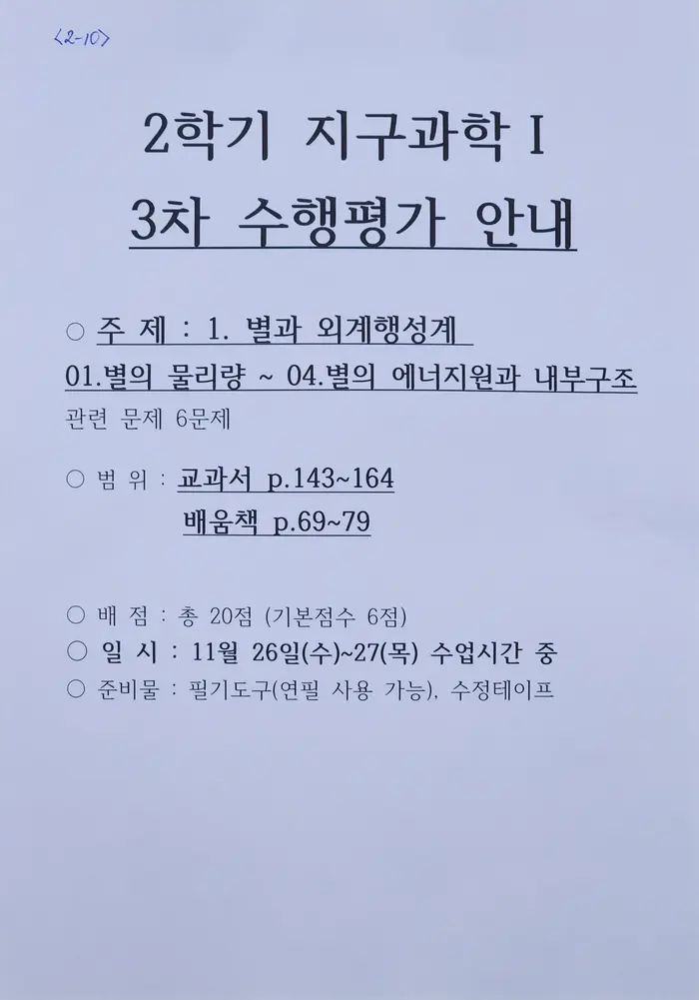

{% extends "base.html" %}
{% block content %}
    <h1 data-content="지구과학 I">
        지구과학 I
    </h1>
    <h4 data-content="현재 진행중 · 예정된 수행평가">
        현재 진행중 · 예정된 수행평가
    </h4>
    <h3>모든 수행평가가 완료되었습니다!</h3>
    <details>
        <summary>
            완료된 지구과학 I 수행평가 보기 [ 펼치기 · 접기 ]
        </summary>
        <li>별과 외계행성계</li>
        
        <li>지구과학 기사 분석</li>
        
        <li>대기와 해양의 상호작용</li>
        
        <li>지질 명소 소개하기</li>
        
        <li>고체 지구 탐구하기</li>
        
    </details>
    <button onclick="location.href='/'">홈으로</button>
{% endblock %}